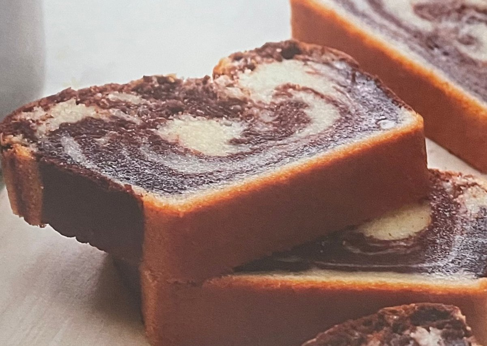

Marbré au yaourt grec
Ingredients
- 125 g de beurre mou
- 170 g de sucre
- 3 oeufs
- 6 c. à s. de yaourt grec
- 200 g de farine T45
- 1 sachet de levure chimique
- 1 pincée de sel
- 40 g de cacao amer
- 1 c. à c. de vanille liquide

Préparation
Étape 1
Fouetter 125 g de beurre mou et 170 g de sucre au batteur jusqu’à ce que le mélange blanchisse et devienne mousseux.
Étape 2
Séparer les blancs des jaunes de 3 oeufs. Ajouter les jaunes, 6 c. à s. de yaourt grec, puis 200 g de farine T45 et 1 sachet de levure chimique tamisées ensemble.
Étape 3
Monter les blancs en neige très ferme avec 1 pincée de sel et les incorporer délicatement. Diviser la pâte en deux.
Étape 4
Délayer 40 g de cacao amer dans 6cl d’eau très chaude au fouet et l’incorporer à une moitié. Parfumer l’autre avec 1 c. à c. de vanille liquide.
Étape 5
Remplir le moule en alternant des petites louches des deux pâtes.
Étape 6
Cuire 35 à 40min à 180ºC : la lame d’un couteau doit ressortir très légèrement humide. Laisser refroidir 10min avant de démouler sur une grille.